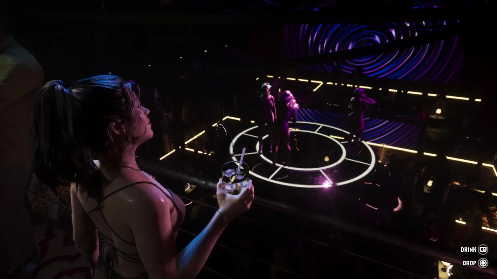
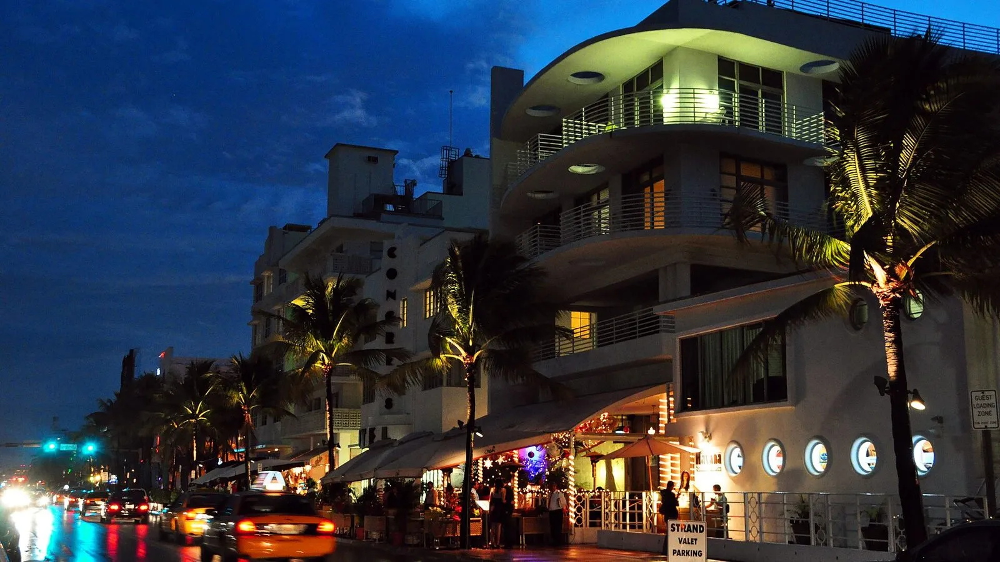
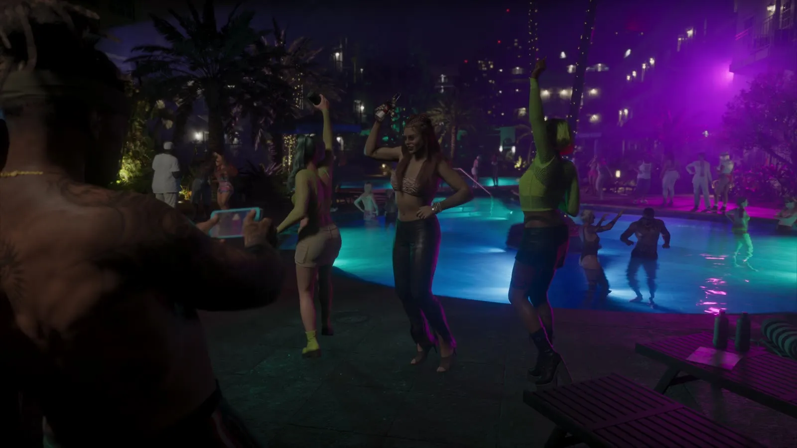
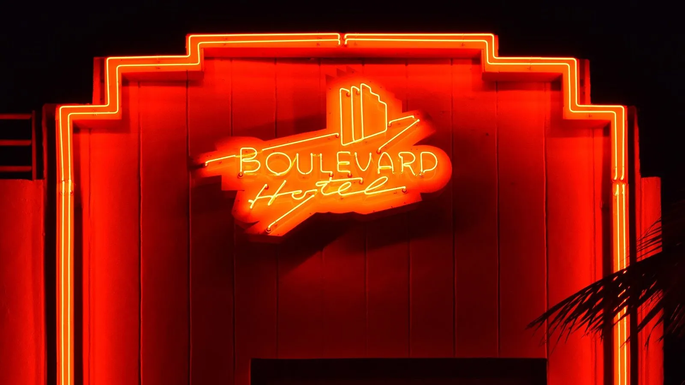

Ночная жизнь Вайс-Сити в GTA 6 и клубы Майами-Бич
Опубликовано:
Неон, вечеринки у бассейнов и клубы до утра — то, чем Майами-Бич известен на весь мир. Клубы в игре вымышленные, а правила продажи алкоголя Rockstar не показывает.


- В «Расширенном показе» GTA 6 ночной Вайс-Сити: небоскрёб с фиолетовой подсветкой, вечеринка у бассейна, клуб с круглой сценой.
- В клубе на экране подсказки DRINK и DROP: героиня держит бокал.
- В развлекательном районе Майами-Бич (Ocean Drive и Collins Avenue между 5-й и 16-й улицами) бары могут продавать алкоголь до 5 утра.
- С 2023 года в районе South of Fifth заведения вместимостью от 100 человек прекращают продажу алкоголя в 2 ночи.
- Клуб Story оспорил это правило в суде и проиграл, в том числе в апелляции в октябре 2023 года.
Что в игре
Около 20:14 «Расширенного показа» начинается ночь в Вайс-Сити. Небоскрёб светится фиолетовым, девушка в машине под неоном делает селфи, у бассейна с голубой подсветкой танцуют люди.
Дальше — клуб: толпа под фиолетовым светом, а сверху виден танцпол с круглой светящейся сценой и танцовщицей. На переднем плане девушка с бокалом, в углу экрана — подсказки DRINK и DROP: «выпить» и «бросить». Названия клуба в кадре нет.

Что в реальности
Ночная жизнь — одна из главных причин, по которым едут в Майами-Бич. Как писала Miami Herald в марте 2023 года, в развлекательном районе города — на Ocean Drive и Collins Avenue между 5-й и 16-й улицами — бары, как правило, могут продавать алкоголь до 5 утра.
Но в южной части Саут-Бич, в районе South of Fifth, с 2023 года действует другое правило. По постановлению городских властей заведения вместимостью от 100 человек прекращают продажу алкоголя в 2 часа ночи; те, что меньше, могут продавать до 5 утра. Закрываться в 2 ночи не обязательно — нельзя только наливать.
Сильнее всего правило ударило по клубу Story — по данным WLRN, он вмещает больше 1000 гостей. Клуб пошёл в суд: в марте 2023 года окружной судья Майами-Дейд отказал ему, а 25 октября 2023 года Третий окружной апелляционный суд Флориды это решение оставил в силе. Когда в апреле 2023 года ограничение вступило в силу, Story закрылся для публики.

В игре клубная ночь выглядит бесконечной, а в реальном Майами-Бич время продажи алкоголя зависит от квартала и размера заведения: в одном районе до 5 утра, в соседнем — до 2 ночи.
Совпадает и отличается
| Майами-Бич | GTA 6 | |
|---|---|---|
| Неон и ночная подсветка | Ocean Drive, неоновые вывески отелей ар-деко | 🟢 Фиолетовые небоскрёбы, неон |
| Вечеринки у бассейна и клубы | Главная часть ночной жизни города | 🟢 Бассейн с подсветкой, клуб с круглой сценой |
| Время продажи алкоголя | До 5 утра; в South of Fifth в больших заведениях — до 2 ночи | 🔵 В игре не показано |
| Конкретный клуб | Например, Story в South of Fifth | 🔵 Вымышленный, название не показано |
Источники: Rockstar Games — «Grand Theft Auto VI: An Extended Look» (20:14–20:31); Miami Herald, 16.03.2023 — правила продажи алкоголя в Майами-Бич; WLRN, 16.03.2023; Miami New Times и The Real Deal, 30.10.2023 — апелляция Story; Wikimedia Commons — фото chensiyuan (CC BY-SA 4.0), Radomianin (общественное достояние).
Реальные фото: Фото: Photograph: Radomianin, Public domain · Wikimedia Commons; Фото: chensiyuan, CC BY-SA 4.0 · Wikimedia Commons. Кадры игры: Rockstar Games.
Каждый день — одно сравнение: кадр игры рядом с реальным фото. Подписывайтесь:
YouTubeInstagramTikTok
 vs
vs